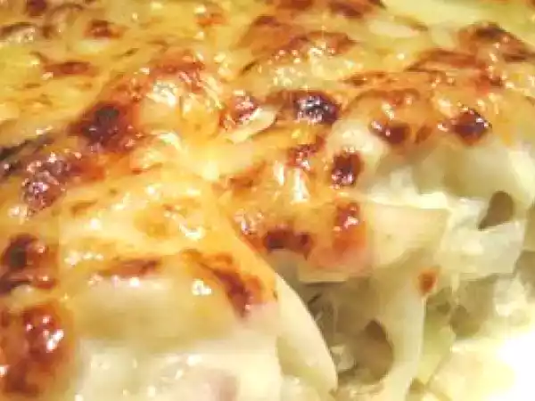

Bacalhau com natas à portuguesa

Bacalhau com natas à portuguesa
Introdução
Que tal um Bacalhau com Natas bem à Portuguesa, como a gente gosta? Aprenda a fazer esta delícia.
ingredientes
- 4 posta(s) de bacalhau demolhado
- 6 dl (600 ml) leite
- 1 cebola(s) cortada(s) em rodelas
- azeite
- 2 c. sopa farinha
- 1 kg batata(s)
- noz moscada
- 2 dl (200 ml) de natas (creme de leite)
- queijo ralado
- q.b. sal
- q.b. Pimenta do reino
Passos
- Cortar as batatas em cubos pequenos e fritá-las em óleo quente. Reservar.
- Num tacho, refogar a cebola com azeite até ficar macia.
- Adicionar a farinha e mexer bem.
- Juntar o leite aos poucos, mexendo sempre para não empelotar.
- Temperar com sal, pimenta e noz moscada.
- Deixar engrossar um pouco, mexendo sempre.
- Adicionar o bacalhau desfiado e as batatas fritas. Misturar bem.
- Colocar a mistura num tabuleiro de forno, polvilhar com queijo ralado e levar ao forno
pré-aquecido a 200ºC até dourar.
|